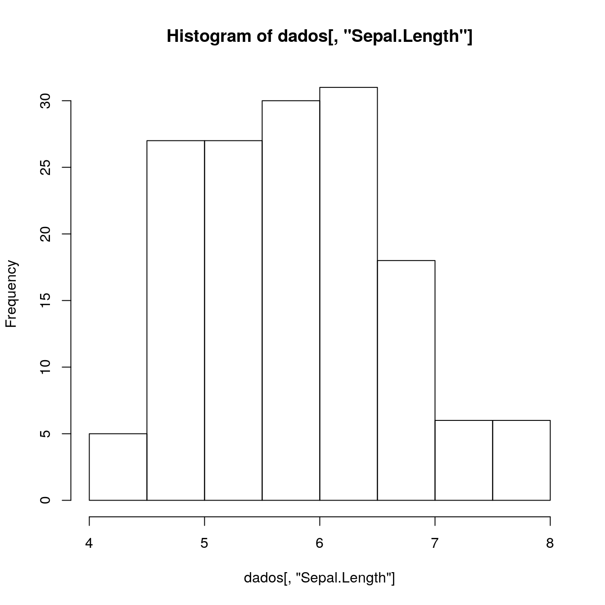
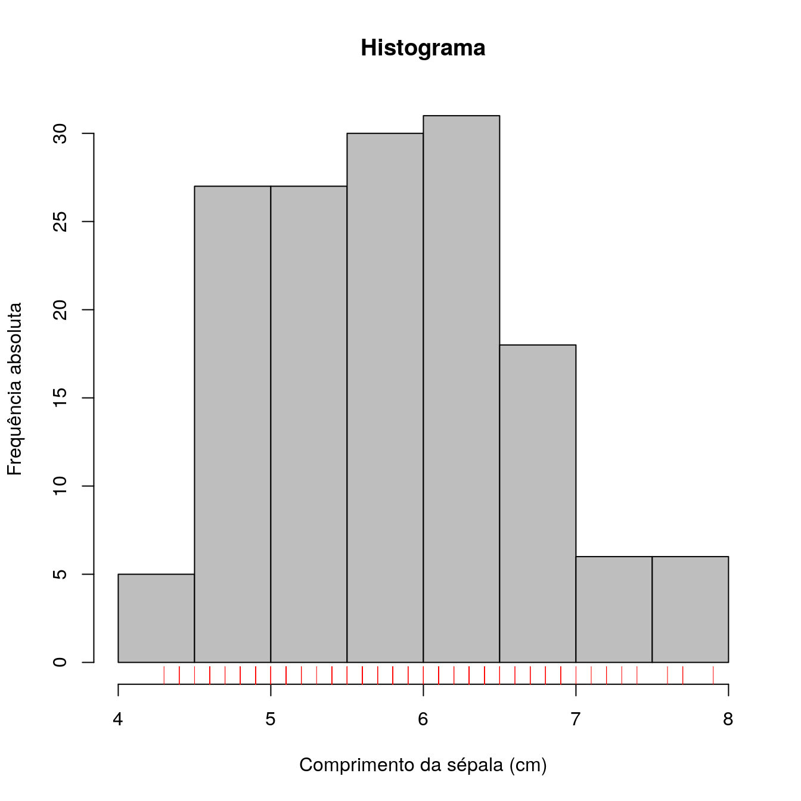

Capítulo 7 Gráficos univariados
## 'data.frame': 150 obs. of 5 variables:
## $ Sepal.Length: num 5.1 4.9 4.7 4.6 5 5.4 4.6 5 4.4 4.9 ...
## $ Sepal.Width : num 3.5 3 3.2 3.1 3.6 3.9 3.4 3.4 2.9 3.1 ...
## $ Petal.Length: num 1.4 1.4 1.3 1.5 1.4 1.7 1.4 1.5 1.4 1.5 ...
## $ Petal.Width : num 0.2 0.2 0.2 0.2 0.2 0.4 0.3 0.2 0.2 0.1 ...
## $ Species : Factor w/ 3 levels "setosa","versicolor",..: 1 1 1 1 1 1 1 1 1 1 ...
Tarefa. No painel inferior direito do RStudio, acesse a aba Packages e encontre o pacote chamado graphics. Navegue pelo índice de funções do pacote graphics e escolha a função gráfica que mais chamar a sua atenção. Descreva o propósito dessa função e tente replicar os exemplos mostrados em sua página de ajuda.
hist(dados[, "Sepal.Length"],
main = "Histograma",
xlab = "Comprimento da sépala (cm)",
ylab = "Frequência absoluta",
col = "gray")
rug(dados[, "Sepal.Length"], col = "red")